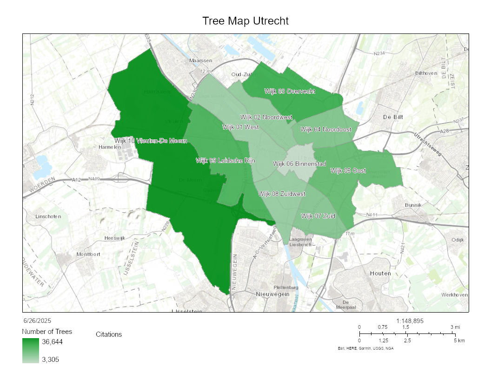

Vector Map
This vector map is to show the amount of trees in the various neighborhoods of Utrecht. This map was created through ArcGIS online by using the vector data on trees in Utrecht and aggregating those points based on what neighborhood they are in. This creates a map where you can visualize all the trees in each neighborhood in Utrecht.
I decided to make this map because I felt like trees are important for my happiness and the mental health and so I wanted to highlight which neighborhoods had many trees and which ones less. This map does have limitations as the density matters as some neighborhoods are larger than others as well as view since having trees does not necessarily directly contribute to my happiness but rather being able to see and be around many of them at once. This type of map would be a huge indicator as to where I would want to live in the future.